Is watching TV shows in China more difficult than in North Korea? ↓
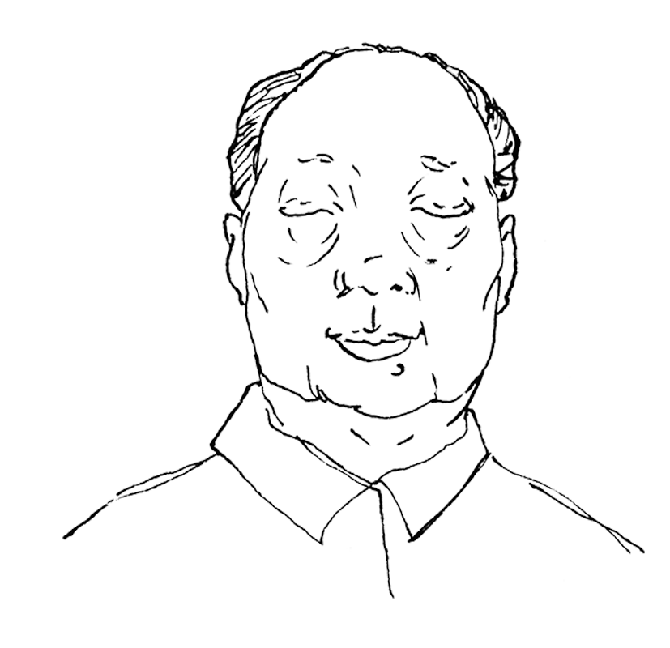
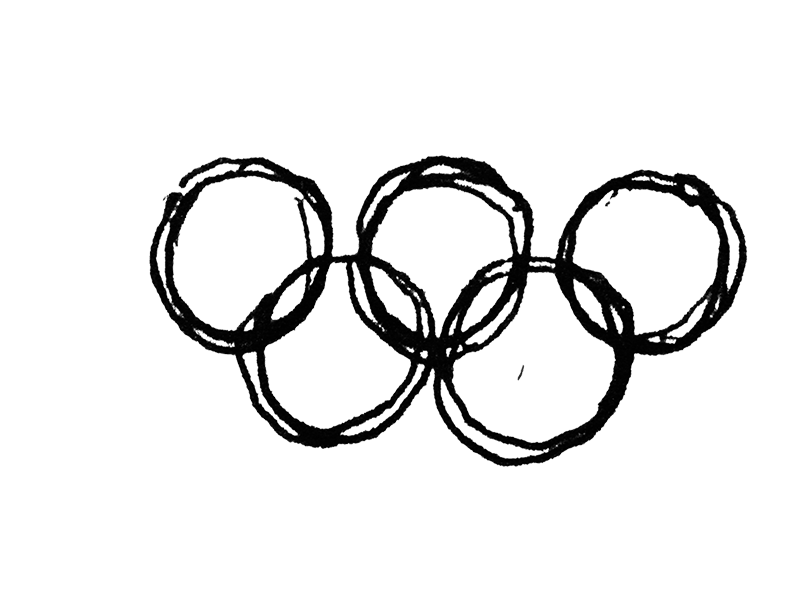
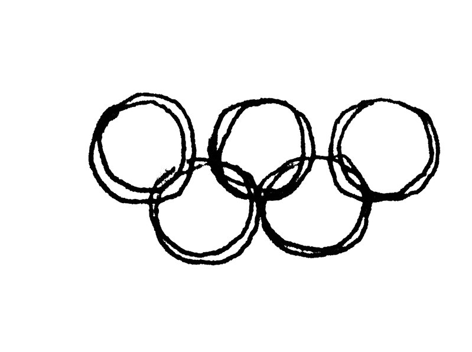
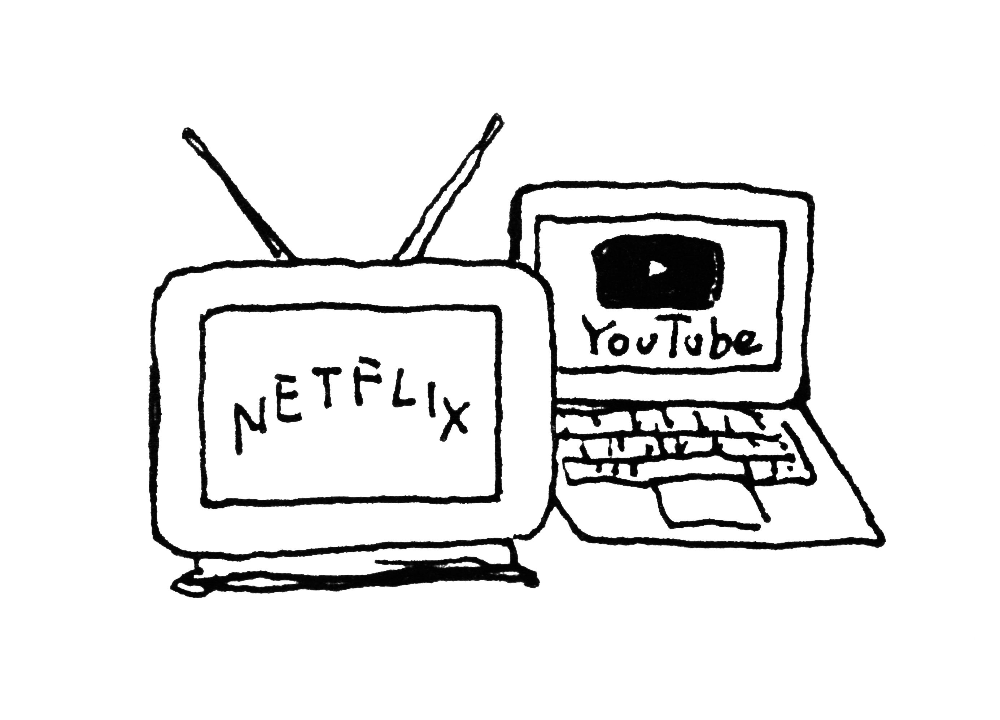
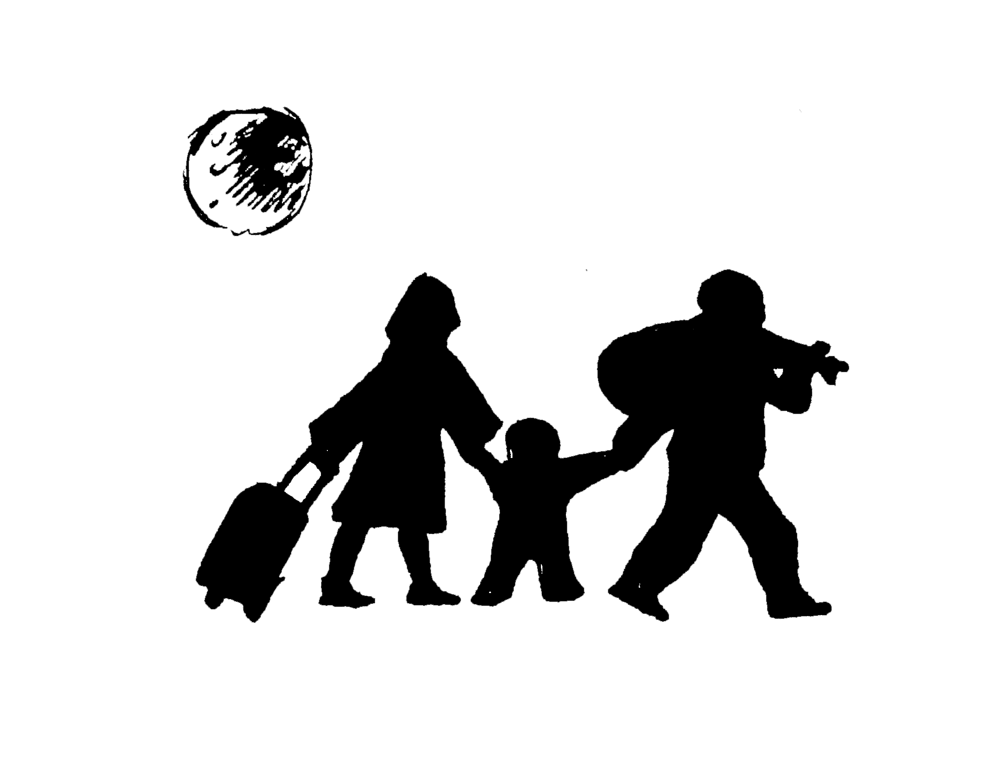
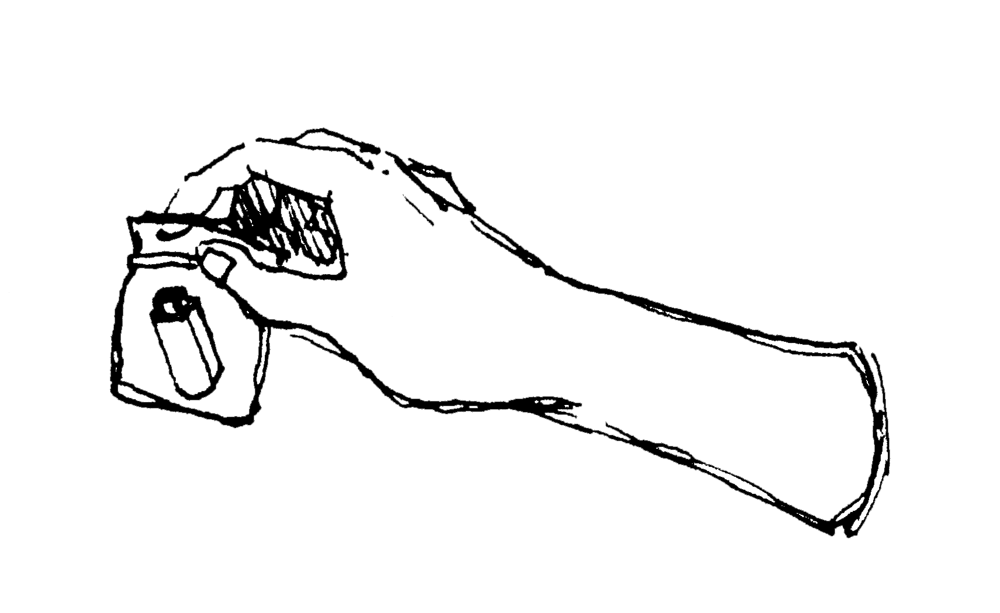
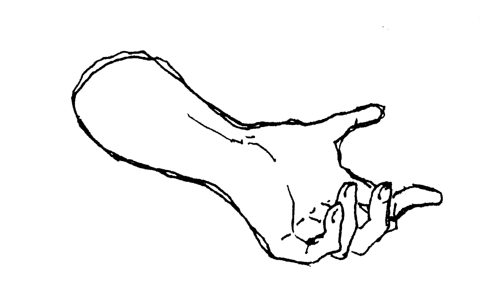
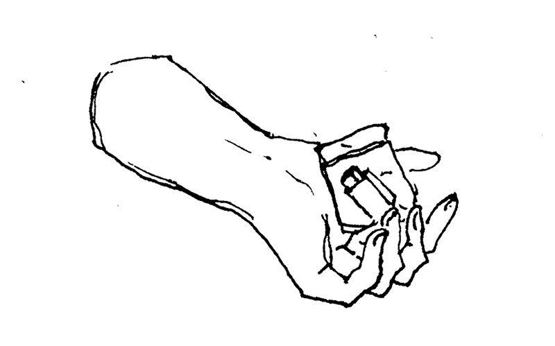
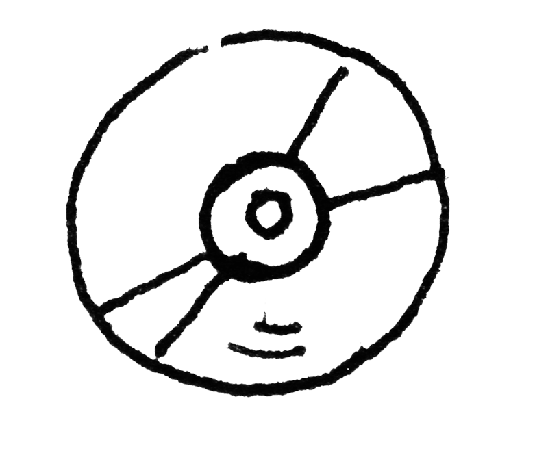
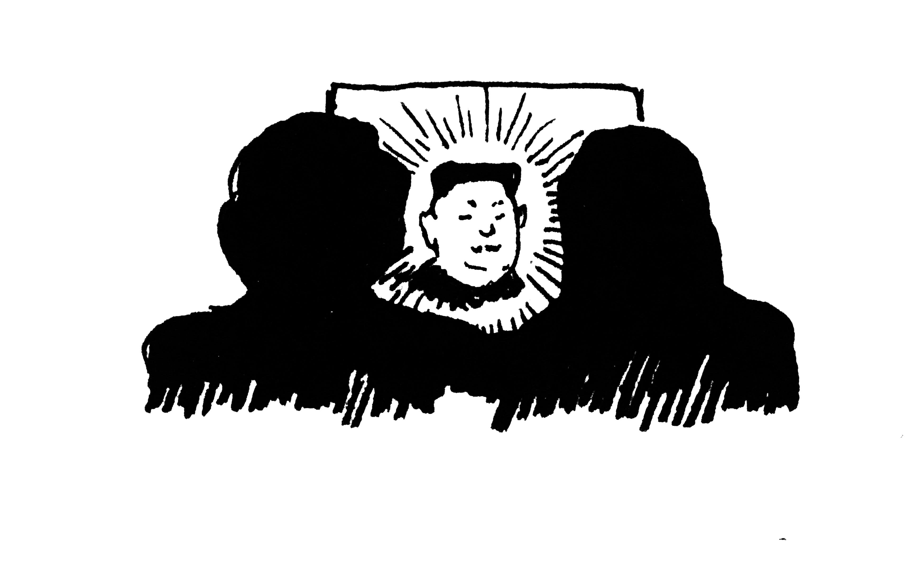
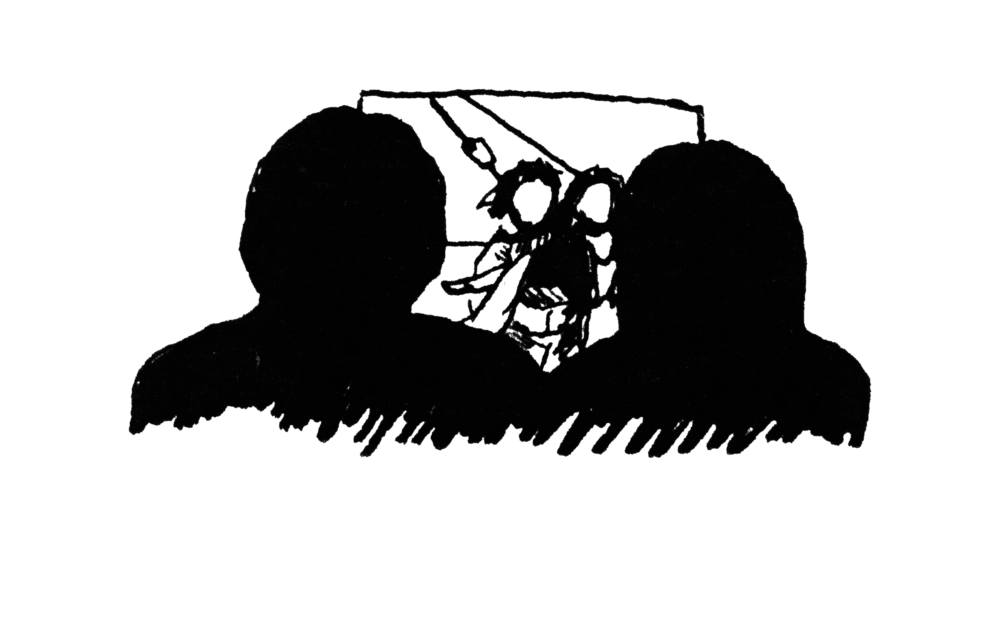
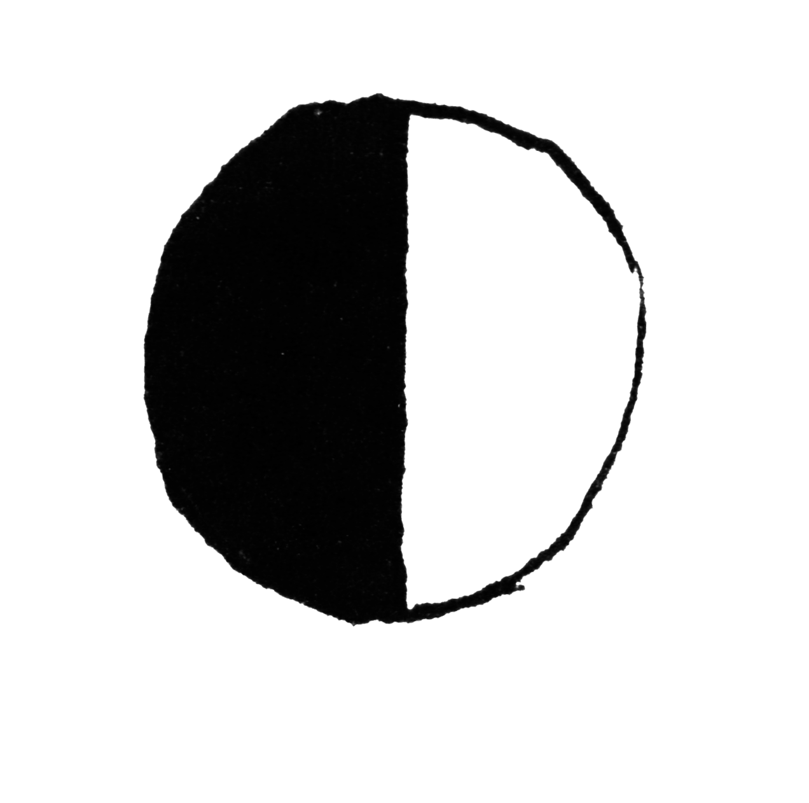
Mao started to rule China.
The Cultural Revolution. Foreign literature, art forms, religious works, symbols, and even artifacts of ancient Chinese culture were deemed "reactionary" and became targets for destruction.
Tiananmen Square Massacre. The students started the protest, called for democracy, greater accountability, freedom of the press ans speech. But ended up troops with assault rifles and tanks killed hundreds of demonstrators.
Since the middle of 1990s, with the collapse of the Souviet Union, natural disasters and also overly strict political system, more than 2,000,000 people died in North Korea. Those who survived started to flee out of the country.
You can easily get USBs containing thousands of shows in black market. "USB is small, once it was discovered, you can just swallow it."
A DVD containing TV shows and movies could cost 3,000 North Korea Won, which could buy several pounds of rice. Information is extremely expensive in this country.
Summer Olympics in Beijing During that time, all Chinese TV stations were ordered to delay live broadcasts by 10 seconds, a policy to give censors time to react in case free-Tibet demonstrators or others staged political protests.
With the ongoing Information War between North Korea and South Korea, people keep sending balloons which hang chocolates, USBs and also DVDs on it, which will be discovered by someone happen to pick them up.
In July 2017, Bilibili, one of the most popular video sites in China, removed most of American and British TV shows, and all foreign categories like "American drama" to comply with regulations. Netflix and other video websites where you could watch those shows, of course, are all banned by the new carried out policy.
Nowadays, around 30% of North Korean know how the outside world is like. Once if there're 50% people get to know it, then people will be able to say out loud about what they need to change their system.
Don't say "it is no big deal" when they took part of your rights; Don't let it go when you know it will only get worse.